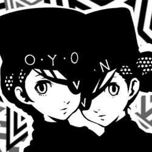

| Rank | Ability |
|---|---|
| 1 | Group Guillotine: Allows you to fuse three Personas to create powerful new ones. |
| 2 | - |
| 3 | Lockdown: Allows you to leave a Persona to learn an attribute resistance. |
| 4 | - |
| 5 | Special Treatment: Allows you to pay to create Personas of a higher level. |
| 6 | - |
| 7 | - |
| 8 | Guillotine Booster: Increases the possible fusions of Personas in Group Guillotine (4+). |
| 9 | - |
| 10 | VIP Treatment: Reduces the amount of money needed for Special Treatment. |
Time of Day: Any Time
Day of Week: Any Day
Location: The Velvet Room
| Rank | Requirements / Dialogue Choices |
|---|---|
| 1 |
Have a Jack Frost with Mabufu (Lv 11 for
Fusion) - Jack Frost learns Mabufu at Lv 12 OR - Arsene + Agathion = Succubus - Succubus + Pixie = Cait Sith - Cait Sith + Regent (Mabufu) = Jack Frost |
| 2 |
Have an Ame-no-Uzume with Frei (Lv 16 for
Fusion) - Hua Po + Berith = Suzaku - Berith + Suzaku (Frei) = Ame-no-Uzume |
| 3 |
Have a Flauros with Tarukaja (Lv 19 for
Fusion) - Berith + Regent = Orobas - Jack-o'-Lantern + Angel = Eligor - Berith + Orobas + Eligor (Tarukaja) = Flauros |
| 4 |
Have a Phoenix with Counter (Lv 21 for Fusion) - Hua Po + Jack-o'-Lantern = Yaksini - Kodama + Flauros = Oni - Yaksini (Counter) + Oni (Counter) = Phoenix |
| 5 |
Have a Setanta with Rakukaja (Lv 25 for
Fusion) - Jack-o'-Lantern + Agathion = Silky - Suzaku + Kaguya Picaro = Lamia - Silky + Lamia (Rakukaja) = Setanta OR - Berith (Rakukaja) + Hua Po = Suzaku (Rakukaja) - Suzaku (Rakukaja) + Phoenix = Setanta |
| 6 |
Have a Neko Shogun with Dekaja (Lv 30 for
Fusion) - High Pixie + Orobas (Dekaja) = Sudama (Dekaja) - Flauros + Ariadne = Anzu (also learns Dekaja at Lv 28) - Kodama + Anzu + Sudama (Dekaja) = Neko Shogun |
| 7 |
Have a Lachesis with Tetraja (Lv 35 for
Fusion) - Ariadne + Jack Frost = Principality - Pixie + Principality (Tetraja) = Anubis (Tetraja) - Tam Lin + Anubis (Tetraja) = Lachesis OR - Clotho learns Tetraja at Lv 28 - Clotho (Tetraja) + Stone of Scone = Lachesis |
| 8 |
Have a Hecatoncheires with Masukunda (Lv 42 for
Fusion) - Hua Po + Thoth (Masukunda) = Andras (Masukunda) - Anzu + Andras (Masukunda) = Hecatoncheires OR - Lilim learns Masukunda at Lv 34 - Lilim (Masukunda) + Anzu = Hecatoncheires |
| 9 |
Have a Bugs with Samarecarm (Lv 49 for Fusion) Requires completing "The Lovesick Cyberstalking Girl" request (July 10) - Hariti learns Samarecarm at Lv 41 - Izanagi Picaro + Oni = Pisaca - Sandman + Orobas = Pisaca - Pixie + Pisaca + Hariti (Samarecarm) = Bugs |
| 10 |
Have a Seth with High Counter (Lv 51 for
Fusion) - Bicorn + Kaguya Picaro (High Counter) = Isis (High Counter) - Anubis + Thoth + Horus + Isis (High Counter) = Seth OR - Dakini learns High Counter at Lv 52 - Dakini (High Counter) + Ame-no-Uzume = Anubis (High Counter) - Anubis (High Counter) + Thoth + Horus + Isis = Seth |
The twins can be invited outside the Velvet Room (Evenings unless specified), doing so will reward you with skill cards each time.
| Earliest Date Available | Skill Card Reward (Event Location) | Requirement |
|---|---|---|
| 6/6 | Maragi & Mabufu (Big Bang Burger) | |
| 6/7 | Frei & Psi (Movie Theater) | Watched a movie at Shibuya. |
| 6/15 | Apt Pupil & Sharp Student (Gym) | |
| 6/25 | Samarecarm (Church) | |
| 6/26 | Masukukaja & Masukunda (Aquarium) | |
| 7/28 | Tarukaja, Rakukaja, and Sukukaja (Sky Tree) | |
| 9/2 - 9/29 & Daytime Only | Growth 2 (Beach) | |
| 9/3 | Tetraja, Dekunda, and Dekaja (Maid Cafe) | Eaten at the maid cafe in Akihabara. |
| 10/1 & Non-rainy weather | Tetrakarn (Destiny Land) | |
| 10/1 - 11/3 | Regenerate 3 (Art Museum) | |
| 11/25 | High Counter (Leblanc) | |
| 12/1 - 12/19 | Heat Riser (Underground Mall) | |
| 1/13 | Enduring Soul (Your Room) | Done all previous dates. |